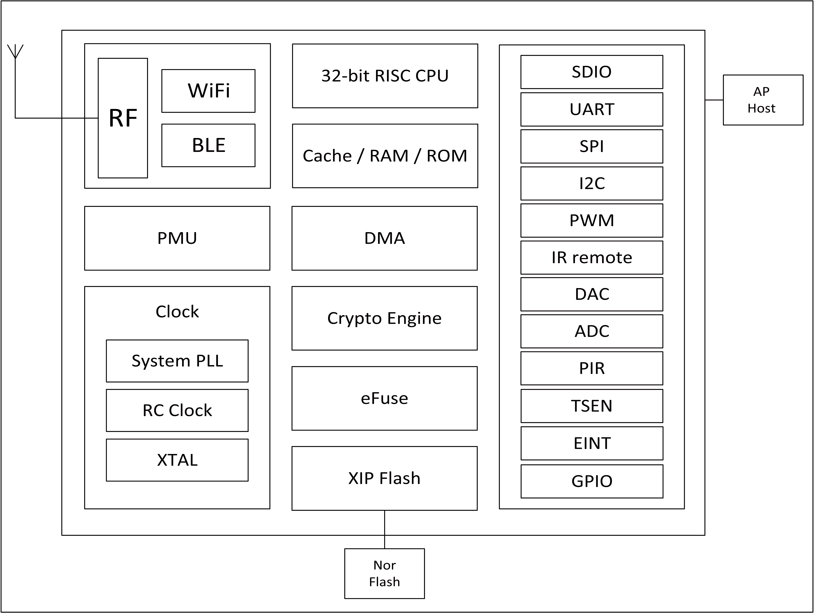

1. Overview¶
BL602/BL604 is Wi-Fi + BLE combo chipset for ultra-low-cost and low-power application. Wireless subsystem contains 2.4G radio, Wi-Fi 802.11b/g/n and BLE 5.0 baseband/MAC designs. Microcontroller subsystem contains a low-power 32-bit RISC CPU, high-speed cache and memories. Power Management Unit controls low-power modes. Moreover, variety of security features are supported.
Peripheral interfaces include SDIO, SPI, UART, I2C, IR remote, PWM, ADC, DAC, PIR, and GPIOs.

Block Diagram
1.1. Wireless¶
- Support IEEE 802.11 b/g/n protocol
- 2.4 GHz band 1T1R mode, support 20 MHz, data rate up to 72.2 Mbps
- Wi-Fi security WPS/WEP/WPA/WPA2 Personal/WPA2 Enterprise/WPA3
- Wireless Multimedia (WMM)
- Frame aggregation (AMPDU, AMSDU)
- Immediate Block ACK
- Fragmentation and defragmentation
- Beacon automatic reception (hardware TSF)
- Hardware support 6 × virtual Wi-Fi interface
- Support Station mode, SoftAP mode, Station + SoftAP mode, Sniffer mode
- Support multiple cloud access at the same time
- Integrated balun, PA/LNA
- Bluetooth® Low Energy 5.0, Bluetooth Mesh
- BLE assists in achieving fast Wi-Fi connection
- Wi-Fi and BLE coexist
- Support BLE 5.0 channel selection #2
- 2M PHY / Coded PHY / ADV extension is not supported
1.2. MCU Subsystem¶
- 32-bit RISC CPU with FPU (floating point unit)
- Level-1 cache
- One RTC timer update to one year
- Two 32-bit general purpose timers
- Four DMA channels
- DFS (Dynamic Frequency Scaling) from 1MHz to 192MHz
- JTAG development support
- XIP QSPI/SPI Flash with hardware decryption support
1.3. Memory¶
- 276KB RAM
- 128KB ROM
- 1Kb eFuse
- Embedded Flash (Optional)
1.4. Security¶
- Secure boot,support ECC-256 signed image
- Secure debug ports
- QSPI/SPI Flash On-The-Fly AES Decryption (OTFAD),support AES-128 CTR mode
- AES 128/192/256 bits
- SHA-1/224/256
- TRNG (True Random Number Generator)
- PKA (Public Key Accelerator),support big number operation,software support sign/verify API
1.5. Peripheral¶
- One SDIO 2.0 slave
- One SPI master/slave with max clock 40Mbps
- Two UART with max baudrate 10Mbps,support RTS/CTS flow control
- One I2C master with max clock 3Mbps
- Five PWM channels with max output frequency 40MHz
- Two 10-bit general DAC channels with max conversion rate 512Ksps
- Twelve 12-bit general ADC channels with max conversion rate 2Msps
- Two general analog comparators (ACOMP),can be CPU wake up source
- One PIR (Passive Infra-Red) detection,can be CPU wake up source
- One infrared remote controller(IR),support NEC RC5 protocol
- 16 or 23 GPIOs
1.6. Power Management¶
- Off
- Hibernate (flexible modes)
- Power Down Sleep (flexible modes)
- Active
1.7. Clock¶
- Support XTAL 24/32/38.4/40MHz
- Internal RC 32kHz oscillator
- Internal RC 32MHz oscillator
- Internal System PLL
- XTAL 32kHz